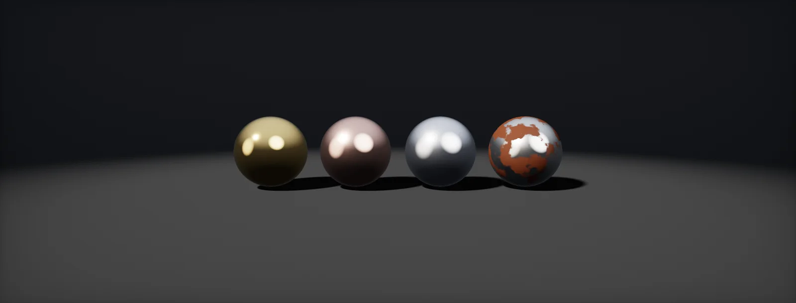

Metals
Why metals have coloured reflections and no diffuse light, how their Fresnel differs from glass, what the edge tint is, measured base colours, rough and brushed metal, coatings, rust and patina, built in Unity HDRP and Unreal.

Why metals look different
In a metal, some electrons are not bound to single atoms. When light arrives, these free electrons move with its electric field and send almost all of it straight back. The little that enters is absorbed within a few nanometres. So a metal has a strong reflection and nothing that comes out from below the surface: no diffuse light. Everything you see on bare metal is reflection.
Physics describes this with a complex n + ik. The real part n bends light as in glass; the imaginary part k, the , makes it die out. How deep it gets:
Two consequences for authoring follow directly. The base colour of a metal is the colour of its reflection, and it is bright: a metal that reflects less than about half the light is rare. And the colour of gold or copper exists only in the reflection, so it changes with what the metal reflects.
Non-metals (dielectrics) work the other way: light enters, scatters around under the surface and comes back out coloured. That is the diffuse part, and the reason for the metallic switch.
Fresnel for metals
All surfaces reflect more at grazing angles (Fresnel). For a dielectric the change is dramatic, from 4 % head-on to 100 % at the edge. A metal starts high, so the change is smaller, and with a complex IOR the exact curve has a shape of its own: for many metals it dips slightly before it rises to 1.
Real-time shaders use : F0 plus a rise towards white with (1 − cos θ)⁵. It is cheap and needs only F0, which is exactly what the base colour stores. Compare it with the exact formula:
Head-on both agree, by construction. Near 70–85° Schlick is too bright for metals with a pronounced dip, and its edge colour always goes to white, while some real metals keep a tint. The difference is small on a sphere and large on objects seen at grazing angles: a long brushed panel, a car body, cutlery on a table.
Edge tint and the 82° fix
Artists do not want to type complex IORs per colour channel. Ole Gulbrandsen (2014) showed a metal can be described by two colours instead: the reflectivity head-on (F0) and an that shapes the curve near the edge. Naty Hoffman (2019) then proposed a cheaper variant, and that is what OpenPBR uses: keep Schlick, but pull it down near 82° so that it passes through the measured value there.
The edge tint is the ratio between the measured reflectance at 82° and what Schlick predicts there. Plug in n and k of a real metal and see how well the corrected curve follows the exact one:
In OpenPBR the edge tint is specular_color: on the metal part of the base it is the F82 tint, on the dielectric part it tints the reflection. Adobe Standard Material and Substance call it Specular Edge Color, Unreal's Substrate has an F90 input that fills a similar role. Unity HDRP Lit and Unreal's legacy model have no such input; they use plain Schlick.
Measured metals
The fitted pairs of F0 and edge tint for common metals are published as part of Adobe Standard Material. They are the best starting point for a metal base colour: use the F0 as the base colour (it is sRGB, so it goes straight into a colour picker) and the tint wherever an edge-tint input exists.
| Metal | F0 / base colour (sRGB) | Edge tint (sRGB) | F0 linear |
|---|---|---|---|
| Silver | 254, 253, 251 | 254, 255, 255 | 0.991, 0.982, 0.965 |
| Aluminium | 245, 246, 246 | 245, 248, 250 | 0.913, 0.922, 0.922 |
| Gold | 255, 219, 152 | 248, 251, 245 | 1.000, 0.708, 0.314 |
| Chromium | 196, 197, 196 | 223, 225, 233 | 0.552, 0.558, 0.552 |
| Copper | 255, 211, 192 | 252, 248, 247 | 1.000, 0.651, 0.527 |
| Iron | 243, 241, 233 | 238, 241, 243 | 0.896, 0.880, 0.815 |
| Mercury | 229, 228, 228 | 232, 238, 244 | 0.784, 0.776, 0.776 |
| Magnesium | 242, 241, 243 | 243, 245, 249 | 0.888, 0.880, 0.896 |
| Nickel | 218, 209, 197 | 233, 236, 240 | 0.701, 0.638, 0.558 |
| Palladium | 223, 218, 212 | 232, 236, 240 | 0.738, 0.701, 0.658 |
| Platinum | 250, 247, 234 | 249, 249, 248 | 0.956, 0.930, 0.823 |
| Titanium | 178, 169, 162 | 239, 244, 249 | 0.445, 0.397, 0.361 |
| Zinc | 241, 240, 238 | 241, 244, 247 | 0.880, 0.871, 0.855 |
Note how bright they are. The darkest, titanium, is still above 160 sRGB. Real metal surfaces are rarely this clean: oxide layers, grease and dust darken and roughen them. Add that as roughness variation and as a dielectric layer (dirt, oxide) in the metalness mask, not by darkening the metal colour.
Rough metals and lost energy
Roughness spreads the reflection (roughness). In theory the total stays the same. In the standard microfacet model it does not quite: light that bounces off one microfacet into another is simply dropped, because the model counts only single bounces. On smooth surfaces that is negligible, on rough metals it is not:
A rough white metal can lose over a third of its light at grazing angles. The usual fix multiplies the specular result by 1 + F0 · (1 − E) / E, with E read from a small precomputed table (Kulla and Conty 2017, Fdez-Agüera 2019). HDRP does this in its Lit shader; OpenPBR's specification asks renderers to conserve energy across all its lobes. If a rough metal looks dull and dark in an engine without it, the base colour is not the problem.
Brushed metal
Brushing, turning on a lathe or rolling leaves tiny parallel grooves. Across the grooves the surface is rough, along them it is smooth, so highlights stretch across the grooves. shading models this with two roughness values, one along the tangent and one along the bitangent, derived from a single roughness and an anisotropy value:
The direction comes from the tangent of the mesh, so the UV layout decides how the brushing runs: U along the grooves for straight brushing. For circular brushing (a pan, a watch face) a tangent map stores the direction per pixel. A normal map alone cannot do this; it tilts the surface but does not make it anisotropic.
OpenPBR has specular_roughness_anisotropy (0 to 1) and a tangent input; HDRP Lit has the Anisotropy material type, Unreal an Anisotropy input (−1 to 1) once enabled. The cheap fallback, used on mobile and by many older games, is a roughness map with fine streaks in the brushing direction: no stretched highlight, but the right texture.
Lacquer, paint and coatings
Many metal objects are not bare: brass with lacquer, car paint with metal flakes under a clear coat, anodised aluminium. A clear coat is a thin dielectric layer on top. It adds its own sharp reflection, which follows dielectric Fresnel (4 % head-on, strong at the edges), and it takes that light away from the metal below, which is seen through the coat twice, in and out:
This produces the typical look of a lacquered or wet surface: a sharp highlight over a blurry one. HDRP's Lit shader offers it as Coat Mask, Unreal as the Clear Coat shading model or a Substrate layer, OpenPBR as the coat_* parameters with their own roughness, IOR and colour.
Coloured transparent coatings (anodising, a tinted lacquer) are the coat colour in OpenPBR terms. Thin coatings of a few hundred nanometres, such as heat tint on titanium or exhaust pipes, are thin-film interference: the colour changes with angle. OpenPBR's thin_film_* parameters and HDRP's Iridescence material type handle it.
Rust, patina and metalness in between
Rust (iron oxide) and the green patina on copper are not metals. They are dielectrics: diffuse, rough, with a 4 % reflection. Tarnish and dust are the same. So an old metal object is a mix of two materials, and the metallic map says which is where.
OpenPBR defines what a value between 0 and 1 means: the share of the surface that is bare metal, with both materials blended linearly. That is what a texel containing a rust border holds, and what a mip level averages to. It also explains why a metalness of 0.5 everywhere looks wrong: no real surface is half metal in every spot.
Author rust in three places at once: metallic 0 where it covers, a dark reddish base colour there (roughly 40–90 sRGB), and high roughness. Edges and scratches through the rust are bare metal again. The same holds for paint over metal: the paint is what you see, metallic 0, until it chips.
Five common metal mistakes
- Dark base colour on a metal. Clean metals are bright (measured values). Darkness comes from dirt, oxide or roughness.
- Metallic 0.5 as a look. Use 0 or 1 and a mask; values in between only at borders (why).
- Diffuse shading painted into a metal. A metal has no diffuse part; painted shadows end up as a dark reflection colour.
- Specular input on metals. Unreal's Specular, Unity's specular colour of non-metals: metals ignore them. The reflection colour is the base colour.
- No environment to reflect. A metal shows its surroundings. In a scene without reflection probes or a sky, every metal turns black or flat grey. That is the topic of reflections.
Build it in Unity HDRP
HDRP's Lit shader covers most metals directly: base colour as F0, metallic 1, an anisotropic material type for brushed metal and a coat mask for lacquer. It uses Schlick Fresnel with energy compensation for rough metals and has no edge-tint input. The route adds a metal library window and a look-dev graph that shows exact, Schlick and F82 Fresnel side by side. Written for Unity 6 with HDRP 17; Unity 2022 LTS works the same apart from a few renamed menu entries.
- Put
MetalLibrary.csin anEditorfolder. Open Window > Atlas > Metal Library, select one or more HDRP/Lit materials in the Project window, set Smoothness and click a metal. It writes the measured F0 into Base Color and sets metallic to 1 (or the metallic remap range to 1 when a mask map is assigned). - Textured metal: keep the metal colour in the base map, painted bright (the darkest bare metal is titanium at about 160–180 sRGB). Variation belongs in smoothness and in the metallic channel where dirt or rust covers it.
- Rust and paint on metal: in the mask map, metallic (R) is 0 where rust or paint covers the metal, 1 where it is bare; the base colour holds the rust colour there (dark, about 40–90 sRGB, reddish). Partial values only at the borders.
- Brushed metal: set Material Type to
Anisotropy. Set Anisotropy (−1 to 1; positive stretches highlights along the tangent) and optionally a Tangent Map. Without one, the mesh tangents are used, so lay out UVs with U along the brushing direction. For round brushing (a pan bottom), bake a tangent map that circles the centre. - Lacquered or painted metal: in Surface Inputs, set Coat Mask to 1. HDRP's coat is a fixed smooth layer (smoothness 0.9, IOR 1.5). Rough the metal underneath to get the look of a lacquered brushed surface.
- Look-dev comparison: put
ConductorFresnel.hlslinAssets/Shaders/. Create Create > Shader Graph > HDRP > Unlit Shader Graph. Compute NdotV with a Dot Product of Normal Vector (World) and View Direction (World, normalised). Add Color propertiesF0andEdgeTintand a FloatMode. In the graph, add a Custom Function node. Set Type toFile, Source toConductorFresnel.hlsland Name toConductorFresnel(without the_floatsuffix). Add the inputs F0 (Vector 3), EdgeTint (Vector 3), NdotV (Float), Mode (Float) and the outputs Fresnel (Vector 3), in that order and with those types: they must match the function's parameters. Connect Fresnel to Base Color. Two spheres with Mode 0 and 1 show what the edge tint changes; it is most visible on titanium, chromium and nickel.
using UnityEditor;
using UnityEngine;
// Window > Atlas > Metal Library. Select HDRP/Lit materials, pick a metal: sets the base colour to the
// measured F0, metallic to 1 and the smoothness you choose. Values: Adobe Standard Material metal table (sRGB).
public class MetalLibrary : EditorWindow
{
static readonly (string name, Color32 f0, Color32 edgeTint)[] Metals =
{
("Silver", new Color32(254, 253, 251, 255), new Color32(254, 255, 255, 255)),
("Aluminium", new Color32(245, 246, 246, 255), new Color32(245, 248, 250, 255)),
("Gold", new Color32(255, 219, 152, 255), new Color32(248, 251, 245, 255)),
("Chromium", new Color32(196, 197, 196, 255), new Color32(223, 225, 233, 255)),
("Copper", new Color32(255, 211, 192, 255), new Color32(252, 248, 247, 255)),
("Iron", new Color32(243, 241, 233, 255), new Color32(238, 241, 243, 255)),
("Mercury", new Color32(229, 228, 228, 255), new Color32(232, 238, 244, 255)),
("Magnesium", new Color32(242, 241, 243, 255), new Color32(243, 245, 249, 255)),
("Nickel", new Color32(218, 209, 197, 255), new Color32(233, 236, 240, 255)),
("Palladium", new Color32(223, 218, 212, 255), new Color32(232, 236, 240, 255)),
("Platinum", new Color32(250, 247, 234, 255), new Color32(249, 249, 248, 255)),
("Titanium", new Color32(178, 169, 162, 255), new Color32(239, 244, 249, 255)),
("Zinc", new Color32(241, 240, 238, 255), new Color32(241, 244, 247, 255))
};
float smoothness = 0.75f;
Vector2 scroll;
[MenuItem("Window/Atlas/Metal Library")]
static void Open() => GetWindow<MetalLibrary>("Metal Library");
void OnGUI()
{
EditorGUILayout.HelpBox("Select HDRP/Lit materials in the Project window, then click a metal. " +
"The edge tint is shown for reference: HDRP Lit has no input for it.", MessageType.Info);
smoothness = EditorGUILayout.Slider("Smoothness", smoothness, 0f, 1f);
scroll = EditorGUILayout.BeginScrollView(scroll);
foreach (var m in Metals)
{
using (new EditorGUILayout.HorizontalScope())
{
EditorGUILayout.ColorField(GUIContent.none, m.f0, false, false, false, GUILayout.Width(44));
EditorGUILayout.ColorField(GUIContent.none, m.edgeTint, false, false, false, GUILayout.Width(22));
if (GUILayout.Button(m.name)) Apply(m.f0);
}
}
EditorGUILayout.EndScrollView();
}
void Apply(Color f0)
{
int count = 0;
foreach (var o in Selection.objects)
{
if (!(o is Material mat) || !mat.HasProperty("_BaseColor")) continue;
Undo.RecordObject(mat, "Apply metal preset");
mat.SetColor("_BaseColor", f0); // a Color is sRGB-space; Unity converts it for the shader
if (mat.HasProperty("_MaskMap") && mat.GetTexture("_MaskMap") != null)
{
// with a mask map, metallic and smoothness come from the texture through the remap ranges
mat.SetFloat("_MetallicRemapMin", 1f); mat.SetFloat("_MetallicRemapMax", 1f);
mat.SetFloat("_SmoothnessRemapMin", smoothness); mat.SetFloat("_SmoothnessRemapMax", smoothness);
}
else
{
mat.SetFloat("_Metallic", 1f);
mat.SetFloat("_Smoothness", smoothness);
}
EditorUtility.SetDirty(mat);
count++;
}
Debug.Log($"Metal preset applied to {count} material(s).");
}
}#ifndef ATLAS_CONDUCTOR_FRESNEL_INCLUDED
#define ATLAS_CONDUCTOR_FRESNEL_INCLUDED
float3 Atlas_Schlick(float3 f0, float mu)
{
return f0 + (1.0 - f0) * pow(1.0 - mu, 5.0);
}
// OpenPBR F82-tint: Schlick, pulled down near 82 degrees so that F(mu = 1/7) = tint * Schlick(1/7)
float3 Atlas_F82(float3 f0, float3 tint, float mu)
{
const float muBar = 1.0 / 7.0;
const float denom = muBar * pow(1.0 - muBar, 6.0);
float3 schlickBar = Atlas_Schlick(f0, muBar);
return saturate(Atlas_Schlick(f0, mu) - mu * pow(1.0 - mu, 6.0) * (1.0 - tint) * schlickBar / denom);
}
// Exact unpolarised Fresnel of a conductor with complex IOR n + ik, per channel
float3 Atlas_Conductor(float3 n, float3 k, float mu)
{
float c2 = mu * mu, s2 = 1.0 - c2;
float3 t0 = n * n - k * k - s2;
float3 a2b2 = sqrt(t0 * t0 + 4.0 * n * n * k * k);
float3 a = sqrt(max(0.5 * (a2b2 + t0), 0.0));
float3 rs = (a2b2 - 2.0 * a * mu + c2) / (a2b2 + 2.0 * a * mu + c2);
float3 rp = rs * (a2b2 * c2 - 2.0 * a * mu * s2 + s2 * s2) / (a2b2 * c2 + 2.0 * a * mu * s2 + s2 * s2);
return 0.5 * (rs + rp);
}
// Mode 0: Schlick (what Lit uses), 1: F82 edge tint (OpenPBR)
void ConductorFresnel_float(float3 F0, float3 EdgeTint, float NdotV, float Mode, out float3 Fresnel)
{
float mu = saturate(NdotV);
Fresnel = Mode < 0.5 ? Atlas_Schlick(F0, mu) : Atlas_F82(F0, EdgeTint, mu);
}
void ConductorFresnelNK_float(float3 N, float3 K, float NdotV, out float3 Fresnel)
{
Fresnel = Atlas_Conductor(N, K, max(saturate(NdotV), 1e-4));
}
#endifHDRP Lit already multiplies specular light by 1 + F0 · (1/E − 1), the energy compensation from the roughness chapter, so rough metals do not need brightening by hand. StackLit offers a second specular lobe and iridescence for hero metals (oil films, heat tint).
Build it in Unreal Engine
Unreal's legacy material model treats a metal the same way: Base Color is F0 when Metallic is 1, and Specular is ignored. Substrate adds an explicit F90, the place for the edge tint. The route builds one parent material, generates an instance per measured metal with Python, and adds brushing, coat and rust. Written for Unreal Engine 5.6 and later. Substrate is production-ready from 5.7; check Project Settings > Rendering > Substrate to see which material model a project uses.
- Create
/Game/Materials/M_Metal. Add a Vector ParameterBaseColorinto Base Color, a constant 1 into Metallic, a Scalar ParameterRoughnessinto Roughness. Add a Vector ParameterEdgeTint(default white); the legacy model ignores it, Substrate uses it below. - Enable Python Editor Script Plugin (Edit > Plugins), restart, then run
create_metal_instances.pywith File > Execute Python Script. It createsMI_Metal_Gold,MI_Metal_Copperand the rest in/Game/Materials/Metals, with linear colours from the measured table. - Brushed metal: in Project Settings > Rendering, enable the anisotropic BRDF (Anisotropic Materials; older versions call it Use anisotropic BRDF) and restart. The main material node gains Anisotropy (−1 to 1) and Tangent. Drive Tangent with a tangent map, or leave it for the mesh tangents (U along the brushing).
- Lacquer: duplicate the parent as
M_MetalCoatedand set Shading Model toClear Coat. Clear Coat 1 and Clear Coat Roughness about 0.05 give a varnish; Base Color and Roughness describe the metal below. Anisotropy also works with Clear Coat. - Rust: blend two sets of inputs with a mask: Lerp Base Color between the metal and a dark rust colour, Metallic between 1 and 0, Roughness between the metal's and about 0.8. Keep the mask mostly 0 or 1.
- With Substrate: use a Substrate Slab BSDF with Diffuse Albedo black, F0 = BaseColor, F90 = EdgeTint, plus Roughness and Anisotropy. Substrate blends F0 to F90 with its own curve, close to but not the same as OpenPBR's F82. For a coat, stack a thin, smooth Slab on top with Substrate Vertical Layer; for rust, mix a rust Slab with Substrate Horizontal Mixing and the mask.
- To see the edge tint on its own, make an Unlit look-dev material: a Custom node with
F82EdgeTint.ush, inputs F0, Tint and NdotV (Dot of PixelNormalWS and CameraVector, saturated), into Emissive Color.
"""Create a material instance per measured metal from a parent material.
Run in the Unreal Editor: enable the Python Editor Script Plugin, then File > Execute Python Script.
The parent needs Vector Parameters named BaseColor and EdgeTint and a Scalar Parameter named Roughness.
Values: Adobe Standard Material metal table (sRGB 0-255), converted to linear here.
"""
import unreal
PARENT = '/Game/Materials/M_Metal'
FOLDER = '/Game/Materials/Metals'
ROUGHNESS = 0.25
METALS = {
'Silver': ((254, 253, 251), (254, 255, 255)),
'Aluminium': ((245, 246, 246), (245, 248, 250)),
'Gold': ((255, 219, 152), (248, 251, 245)),
'Chromium': ((196, 197, 196), (223, 225, 233)),
'Copper': ((255, 211, 192), (252, 248, 247)),
'Iron': ((243, 241, 233), (238, 241, 243)),
'Mercury': ((229, 228, 228), (232, 238, 244)),
'Magnesium': ((242, 241, 243), (243, 245, 249)),
'Nickel': ((218, 209, 197), (233, 236, 240)),
'Palladium': ((223, 218, 212), (232, 236, 240)),
'Platinum': ((250, 247, 234), (249, 249, 248)),
'Titanium': ((178, 169, 162), (239, 244, 249)),
'Zinc': ((241, 240, 238), (241, 244, 247))
}
def srgb_to_linear(v):
c = v / 255.0
return c / 12.92 if c <= 0.04045 else ((c + 0.055) / 1.055) ** 2.4
def linear_color(rgb):
return unreal.LinearColor(*[srgb_to_linear(c) for c in rgb], 1.0)
assets = unreal.EditorAssetLibrary
mel = unreal.MaterialEditingLibrary
tools = unreal.AssetToolsHelpers.get_asset_tools()
parent = assets.load_asset(PARENT)
if parent is None:
raise RuntimeError('Create the parent material first: ' + PARENT)
for name, (f0, tint) in METALS.items():
asset_name = 'MI_Metal_' + name
path = FOLDER + '/' + asset_name
if assets.does_asset_exist(path):
mi = assets.load_asset(path)
else:
mi = tools.create_asset(asset_name, FOLDER, unreal.MaterialInstanceConstant,
unreal.MaterialInstanceConstantFactoryNew())
mel.set_material_instance_parent(mi, parent)
mel.set_material_instance_vector_parameter_value(mi, 'BaseColor', linear_color(f0))
mel.set_material_instance_vector_parameter_value(mi, 'EdgeTint', linear_color(tint))
mel.set_material_instance_scalar_parameter_value(mi, 'Roughness', ROUGHNESS)
mel.update_material_instance(mi)
assets.save_loaded_asset(mi)
unreal.log('metal instance ready: ' + path)// Custom node "F82EdgeTint" for a look-dev material (Unlit or Emissive). Inputs: F0 (float3), Tint (float3), NdotV (float). // Output Type: CMOT Float 3. NdotV: dot(PixelNormalWS, CameraVector), saturated. const float muBar = 1.0 / 7.0; const float denom = muBar * pow(1.0 - muBar, 6.0); float mu = saturate(NdotV); float3 schlick = F0 + (1.0 - F0) * pow(1.0 - mu, 5.0); float3 schlickBar = F0 + (1.0 - F0) * pow(1.0 - muBar, 5.0); return saturate(schlick - mu * pow(1.0 - mu, 6.0) * (1.0 - Tint) * schlickBar / denom);
Substrate compensates the energy that single-scattering specular loses on rough surfaces. With legacy materials, compare rough metals against a reference: if they look a little dark, that is the loss from the roughness chapter, not a wrong base colour.
Sources and further reading
The formulas and engine details in this unit come from these references. Engine documentation changes between versions.
- SpecOpenPBR Surface: metal and F82-tint modelAcademy Software Foundationbase_metalness as an area fraction, the F82 formula and specular_color as edge tint.
- PaperArtist Friendly Metallic FresnelOle Gulbrandsen · JCGT 2014Reflectivity and edge tint instead of n and k.
- TalkFresnel equations considered harmfulNaty Hoffman · Material Appearance Modeling 2019The case for Schlick with a tint correction near 82°.
- SpecAdobe Standard Material: metal material referencesAdobeMeasured F0 and edge-tint colours of metals.
- TalkRevisiting physically based shading at ImageworksChristopher Kulla, Alejandro Conty · SIGGRAPH 2017Energy compensation for multiple scattering on rough microfacets.
- PaperA multiple-scattering microfacet model for real-time image-based lightingCarmelo J. Fdez-Agüera · JCGT 2019The real-time version of the compensation.
- DocsHDRP Lit: anisotropy and coat maskUnityMaterial types, Coat Mask and the mask map.
- ArticleImproved shading models in Unreal Engine 4.25 and beyondEpic GamesAnisotropy and Clear Coat inputs.
- DataRefractive index databaseM. PolyanskiyMeasured n and k of metals across wavelengths, to try in the Fresnel widgets.